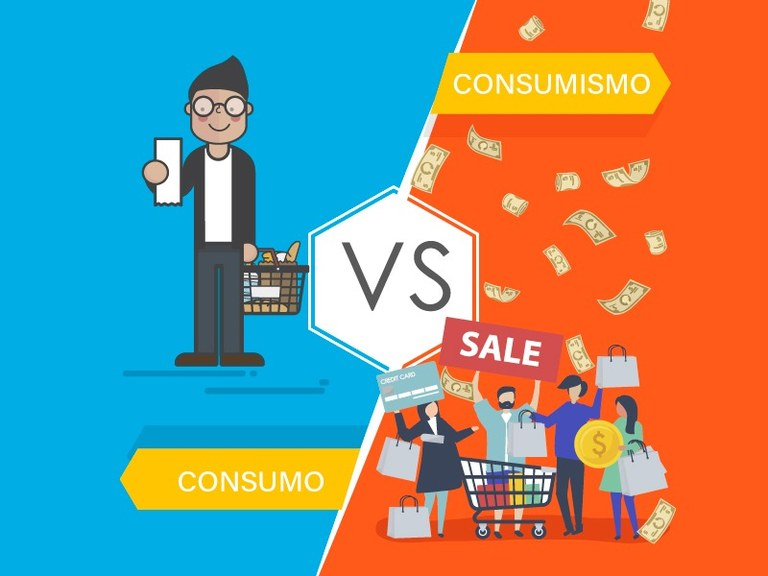

O que é ?
Consumo é o ato de utilizar um produto ou serviço para satisfazer uma necessidade pessoal ou de um grupo. Desta maneira, a ação de comer, se vestir e até mesmo o lazer, são atos de consumo.Podemos consumir bens materiais de longa ou curta duração. Um exemplo são os alimentos: as frutas devem ser ingeridas imediatamente; já os grãos, como o arroz e o feijão, podem ser guardados por mais tempo. Isto também vale para os objetos, pois existem aqueles que tem maior durabilidade como móveis e outros que terão uma vida útil menor, como os eletrodomésticos.
Tipos de consumo
Consumo essencial e supérfluo: diz respeito às necessidades primárias do indivíduo como a alimentação, vestuário e lazer. Já o supérfluo é tudo aquilo que não é prioritário a nossa existência.
Consumo individual e coletivo: é aquele exercido por uma só pessoa, quando esta adquire bens para uso exclusivo. Por outro lado, o consumo coletivo abarca os serviços que são utilizados por todos como saúde, educação e transportes.
Consumo intermediário e final: significa o destino que terá um bem. Uma empresa adquire tecidos para fazer roupas é um exemplo de consumo intermediário, pois o tecido ainda será transformado. Por sua parte, quando se compra uma roupa já pronta, será para o consumidor final.
Consumo sustentável: é aquele que respeita o meio-ambiente. O consumidor tem um papel ativo, pois só vai adquirir itens que sejam produzidos sem prejudicar a natureza..
Risco que o consumismo trás
Atualmente, a sociedade está orientada para o consumo. Isso leva às pessoas a adquirirem mais bens do que necessitam ou comprarem por impulso bens que não tem nenhuma utilidade. Este fenômeno é chamado de consumismo. Em alguns casos, o consumismo é comparado a uma doença e pode ser tão prejudicial quanto o vício às drogas ou à bebida.
O consumo excessivo gera problemas ambientais como, por exemplo, poluição da água e excesso de resíduos sólidos que nem sempre são reciclados, reutilizados ou reaproveitados, bem como falta ou impacto negativo sobre os recursos naturais.
Detalhes dos serviços oferecidos.
Como conscientizar as pessoas sobre o consumismo?
Compre somente o necessário. ...
Opte por embalagens reduzidas ou retornáveis. ...
Atenção aos alimentos. ...
Ande menos de carro. ...
Separe corretamente o lixo para reciclagem. ...
Faça seus próprios brinquedos. ...
Não jogue no lixo, doe! ...
Plante uma horta em casa.
Fontes
https://www.todamateria.com.br/consumo/#:~:text=Consumo%20%C3%A9%20o%20ato%20de,de%20longa%20ou%20curta%20dura%C3%A7%C3%A3o.